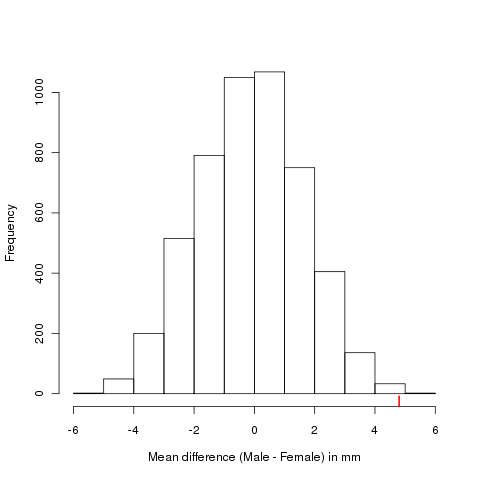

permute: a package for generating restricted permutations
Posted in
Tagged
Ecology Environmetrics Ordination Permutation tests permute R vegan
Blogroll
Multivariate ordination methods are commonly used in ecology to investigate patterns in species composition in space or time. Constrained ordination methods such as redundancy analysis (RDA) and canonical correspondence analysis (CCA) are effectively just multiple regressions, but we lack the parametric theory to adequately test the statistical significance of terms in the model. Other techniques likewise lack the appropriate theory, such as the Mantel test, vector fitting into ordination space, among many others.
Instead, permutation tests are used to form an appropriate Null distribution for a test statistic against which we can evaluate the observed value of that statistic. In constrained ordination the test statistic is usually in the form of a pseudo F statistic, although one advantage of the permutation approach is that any suitable statistic can be used in the test. If the observed value of the test statistic is unusual in the context of the Null distribution derived by permuting the data, say in the top 5 or 1 percent, we conclude that the observed relationship is unlikely to have arisen by chance and is therefore significant.
Simply shuffling the rows of the input data, a process also known as a randomisation test, is sufficient where the observations in the data are independent. If the observations are independent, under the Null model any row from the species data can be matched with any row from the predictor data, which justifies the use of randomisation as the basis for testing the significance of the model.
In many cases, however, ecological data are not independent, having been collected sequentially in space (a transect) or time (time series). Designed experiments are commonplace, with replicates located within plots that are experimentally manipulated. Observations might also have been repeatedly made from within a number of sampling locations or plots, or from a spatial grid over the region of interest.
The vegan package has long had permutation tests, based on the function permuted.index(). This function allowed for simple randomisation, or randomisation within groups, defined by a factor supplied as argument strata.
CANOCO has long had support for these restricted permutations methods. I have been working sporadically for several years developing code initially in vegan and then under the banner of the permute package to implement similar functionality.
In a series of posts over the coming weeks I will explain what permute can do and illustrate how to use the package. Over time, myself and the other vegan developers will start interfacing existing functions in the package that use permutations with the permute package so that gradually the scope of permutation tests in vegan will improve.
To get you started though, here is a quick, simple example of doing a randomisation test using permute.
We consider a small data set of mandible length measurements on specimens of the golden jackal (Canis aureus) from the British Museum of Natural History, London, UK. These data were collected as part of a study comparing prehistoric and modern canids (Higham et al. 1980), and were previously analysed by Manly (2007). There are ten measurements of mandible length on both male and female specimens. The data are available in the jackal data frame supplied with permute. Load the package and the data set
> require(permute)
> data(jackal)
> jackalThe interest is in whether there is a difference in the mean mandible length between male and female golden jackals. The null hypothesis is that there is zero difference in mandible length between the two sexes or that females have larger mandibles. The alternative hypothesis is that males have larger mandibles. The usual statistical test of this hypothesis is a one-sided t test, which can be applied using t.test()
> jack.t <- t.test(Length ~ Sex, data = jackal, var.equal = TRUE,
+ alternative = "greater")
> jack.t
Two Sample t-test
data: Length by Sex
t = 3.4843, df = 18, p-value = 0.001324
alternative hypothesis: true difference in means is greater than 0
95 percent confidence interval:
2.411156 Inf
sample estimates:
mean in group Male mean in group Female
113.4 108.6
A permutation-based test can be used to test the same Null hypothesis, but without some of the assumptions of the t test, most importantly the assumption that the data are a random sample from the population of golden jackals. With a permutation test, we are free to choose any suitable test statistic. We could use the t statistic, but the difference in means of the Female and Male groups will suffice. To implement this we build a function that will compute the difference of means for the Male and Female groups:
meanDif <- function(x, grp) {
mean(x[grp == "Male"]) - mean(x[grp == "Female"])
}This function can be used in a for() loop to generate the permutation distribution of the test statistic under the Null hypothesis. We will perform 4999 random permutations, so we allocate a vector of length 5000 to hold the resulting difference of means. Under the Null hypothesis, the observed difference of means is just one of the possible values so we count it as part of the Null distribution (hence the length of 5000). In the code chunk below, Djackal will contain the 5000 differences of means for the Null distribution, N holds the number of observations in the jackal data set. Then we seed the pseudo-random number generator to get reproducible results and initiate a loop to generate the Null distribution, of which more in a minute. The last line adds the observed difference of means to the Null distribution
> Djackal <- numeric(length = 5000)
> N <- nrow(jackal)
> set.seed(42)
> for (i in seq_len(length(Djackal) - 1)) {
+ perm <- shuffle(N)
+ Djackal[i] <- with(jackal, meanDif(Length, Sex[perm]))
+ }
> Djackal[5000] <- with(jackal, meanDif(Length, Sex))
The loop runs over the values {1,…4999} and generates a randomisation of the N rows in the jackal data frame using the shuffle() function. The second line in the loop computes the difference in mean mandible length for the permuted data. shuffle() is one of the key functions available in permute. When called, as here, with a single argument (the number of observations) it returns a random permutation of the integers {1, …, N}. In fact, it works very much as a wrapper for the base R function sample():
> set.seed(2)
> (r1 <- shuffle(10))
[1] 2 7 5 10 6 8 1 3 4 9
> set.seed(2)
> (r2 <- sample(1:10, 10, replace = FALSE))
[1] 2 7 5 10 6 8 1 3 4 9
> all.equal(r1, r2)
[1] TRUE
In future posts I’ll talk more about shuffle() and some of the other key functions in permute. For now, we’ll rush ahead and look at the results of the permutation test. A histogram of the Null distribution showing the observed difference of means via a rug plot can be produced using
> hist(Djackal, main = "",
+ xlab = expression("Mean difference (Male - Female) in mm"))
> rug(Djackal[5000], col = "red", lwd = 2)
The resulting figure looks like the one shown below

The observed difference of mean mandible length is located in the extreme right tail of the Null distribution. The number of permuted difference of mean lengths that are equal to or greater than the observed difference is 12, yielding a permutational p value of 0.0024
> (Dbig <- sum(Djackal >= Djackal[5000]))
[1] 12
> Dbig/length(Djackal)
[1] 0.0024
This is comparable with the p value determined via the t-test and indicates strong evidence against the null hypothesis of no difference in mean mandible lengths. This we can reject the Null hypothesis that male and female golden jackals have similarly sized mandibles.
I hope that has whet your appetite? In future posts I’ll explain more about how permute works and explain how to use it to generate restricted permutations.
References
Higham C, Kijngam A, Manly B (1980). An analysis of prehistoric canid remains from Thailand. Journal of Archaeological Science, 7, 149–165. Manly B (2007). Randomization, bootstrap and Monte Carlo methods in biology. 3rd edition. Chapman & Hall/CRC, Boca Raton.
Social